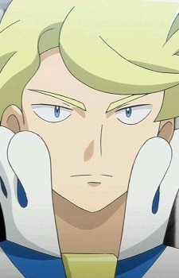
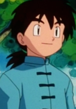

|
Firo Prochainezo |
- Baccano!
- Baccano! Specials
|
Firo Prochainezo is the youngest executive of Manhattan's Martillo Family camorra. He is currently immortal after drinking Szilard Quates' immortality elixir. He can be friendly, humorous and compassionate person despite being a member of the Camorra. He is not afraid to confront people, nor is he worried about his impression on the person. He is somewhat insecure, since he is surround by exceedingly talented people. He is a blunt person and can be negative toward other. Violents comes easy to him as well. He has some deep-seated with femininity. |
|  |
Siebold |
- Pokemon XY: Mega Evolution
|
Siebold is a member of the Kalos region's Elite Four. He specializes in water-type Pokemon. In addition to being apart of the Elite Four, he is a famous chef. He views Pokemon battle as an art, comparing to cuisine food. He is a solitary, standoffish, contemplative, intelligent and wise person. He is extremely passionate about his battling skills, but can be moody and hot temper. He has a calm appearance. |
|  |
Sylvester |
|
Sylvester is a Pokemon Trainer who has a Farfetch'd. His Farfetch'd does not listen to him. He is making Charcoal from trees that Farfetch'd cuts down. |
 |
Treize Bain |
|
Treize Bain is the son of Carr Benedict and Fiona. He is the prince of Ixtova. He has a twin sister named Merielle. He is thoughtful and calm by nature. He is also somewhat dorky. |